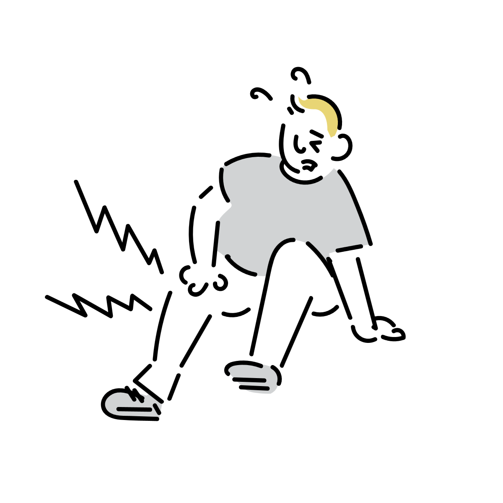

足が痺れたとき、くすぐったい感じがするのはなぜ？
長時間座ったあとや正座のあとに、足がジンジンしたり、くすぐったいような不思議な感覚になることがあります。
「痛い」と「くすぐったい」の中間のような感覚で、思わず足を動かしたくなる人も少なくありません。
また、「普通はビリビリするはずなのに、自分だけ感覚が違うのでは？」と気になる人もいます。
これは単なる気のせいではなく、圧迫されていた神経が回復していく途中で起こる反応と考えられています。

痺れは「神経の通信トラブル」に近い
長時間同じ姿勢を続けると、足の神経や血管が圧迫されることがあります。
すると神経の信号がうまく伝わりにくくなり、感覚が鈍くなったり、逆に変な感覚が出たりします。
いわゆる「足が痺れる」という状態は、完全に感覚が消えているわけではなく、神経の通信が不安定になっている状態に近いイメージです。
そのため、感覚が正常ではないぶん、「ジンジン」「ムズムズ」「くすぐったい」など複雑な感覚として知覚されることがあります。
なぜ「くすぐったい感じ」になるのか
神経が圧迫から解放されると、止まっていた信号が一気に流れ始めます。
このとき神経はまだ安定しておらず、触覚・痛覚・温度感覚などが少し混線した状態になります。
その結果、「痛いほどではないけど変に敏感」「触られるとムズムズする」といった独特の感覚が生まれます。
つまり、くすぐったさは「感覚が戻る途中のノイズ」に近い反応とも考えられます。
血流の変化も関係している
痺れは神経だけでなく、血流の変化も関係しています。
長時間圧迫されていた部分では、一時的に血流が低下しています。
その後、姿勢を変えて血流が戻ると、神経周囲の状態も急激に変化します。
この変化が、ジワジワした感覚やムズムズ感につながることがあります。
「ビリビリ感」との違い
痺れの感覚は人によってかなり違います。
「ビリビリする」と感じる人もいれば、「かゆい」「くすぐったい」「熱い感じ」と表現する人もいます。
これは、どの種類の神経がどの程度影響を受けているかで感じ方が変わるためです。
「くすぐったい」と感じる人がいるのはなぜ？
足の痺れというと「ビリビリ」「ジンジン」という表現が有名ですが、実際には感じ方にはかなり個人差があります。
そのため、「自分だけ変なのでは」と心配する必要はあまりありません。
神経には、触覚・痛覚・温度感覚など複数の種類があり、どの感覚が強く反応するかで痺れの印象も変わります。
例えば痛覚寄りに反応すると「ビリビリ」に近くなり、触覚寄りに反応すると「ムズムズ」「くすぐったい」に近く感じやすくなります。
また、同じ人でもその日の疲労や姿勢、圧迫の強さによって感覚が変わることがあります。
つまり、「痺れ」というひとつの現象の中に、さまざまな感覚の混ざり方があると考えるとイメージしやすくなります。
動かしたくなるのは自然な反応
痺れた足を思わず動かしたくなるのも自然な反応です。
体は感覚異常を「正常ではない状態」として認識するため、無意識に姿勢を変えたり、足をさすったりして回復を促そうとします。
実際に軽く動かすことで血流や神経の状態が安定し、痺れが徐々に落ち着いていくことがあります。
普通の痺れと注意が必要な痺れ
一時的な痺れは、正座や長時間の圧迫などで比較的よく起こります。
しかし、長時間続く痺れや、何もしていないのに頻繁に起こる痺れは別の原因が関係していることもあります。
特に「片側だけ強い」「力が入りにくい」「感覚が戻らない」「急に悪化した」といった場合は注意が必要です。
痺れは神経・血管・脳など幅広い原因で起こるため、違和感が続く場合は医療機関への相談も検討してください。
痺れを起こしにくくするには
同じ姿勢を長時間続けすぎないことが基本になります。
正座や脚を組む姿勢を長く続けると、神経や血管への圧迫が強くなりやすくなります。
デスクワーク中も、ときどき足を動かしたり姿勢を変えたりすると、痺れの予防につながります。
参考情報と注意点
一時的な痺れはよくある現象ですが、強い症状や長引く症状には別の原因が含まれることがあります。
関連アイテム
 | 価格:3980円 |